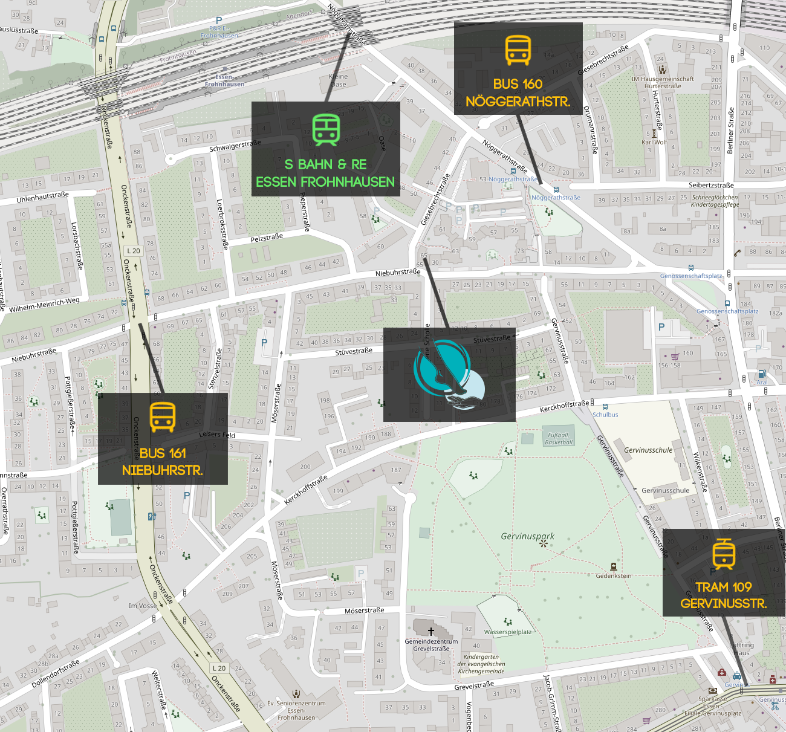

Podologie Kubiak
Praxis für Podologie und med. Fusspflege
Montags - Freitags
8:30 - 18:00
Samstags
nach Vereinbarung
Hausbesuche
nach Vereinbarung
Giesebrechtstraße 65
45144 Essen Frohnhausen


Herzlich Willkommen
Wir freuen uns sehr, Sie hier bei uns begrüßen zu dürfen und möchten Ihnen einen herzlichen Empfang bereiten.
Als professionelle podologische Praxis stehen wir Ihnen mit all unserem Fachwissen und unserer Leidenschaft für gesunde Füße zur Seite.
Ihre Gesundheit und Zufriedenheit stehen für uns an erster Stelle.
Auf der Grundlage bewährter und hochmoderner Methoden können Sie sich darauf verlassen, dass wir Ihnen eine Versorgung auf höchstem Niveau garantieren, die von Expertenhand ausgeführt wird.
Kommen Sie uns auf einen Besuch vorbei, und wir begleiten sie auf ihrem Weg zu vitalen und schmerzfreien Füßen.


Behandlungen
Podologische Komplexbehandlung
Die podologische Komplexbehandlung bietet eine umfassende Pflege und Behandlung ihrer Füße. Nach einem angenehmen Fußbad werden neben der Nagelpflege auch eventuelle Hautprobleme behandelt. Abschließend verwöhnen wir Sie mit einer kurzen Fußmassage.

Schmerztherapie
Falls sie akute Schmerzen haben, beispielsweise wegen eines eingewachsenen Fußnagels, können wir ihnen schnell helfen. Rufen sie während unserer Geschäftszeiten an, und wir vereinbaren kurzfristig einen Termin. Trotz des Termins sollten sie etwas Wartezeit mitbringen.
Nagelspangentherapie (Podofix)
Bei der Nagelspangentherapie wird eine kleine Metallspange auf den betroffenen Nagel aufgebracht, um sanften Druck auszuüben und so die natürliche Nagelwachstumsrichtung wiederherzustellen. Diese Methode kann effektiv Schmerzen lindern und Komplikationen durch eingewachsene Nägel verhindern.
Diabetiker- & Rheumapatienten
Diabetiker oder Rheumapatienten besitzen ein höheres Risiko für Fußkomplikationen. Wir bieten eine spezialisierte und umfassende Behandlung für Patienten aller Krankenkassen um die Fußgesundheit zu verbessern und mögliche Folgen der Erkrankung zu minimieren.

Anfahrt
Map Links
Anreisemöglichkeiten
Autofahrer:
A40 Ausfahrt Essen-Frohnhausen
Über Leipziger Straße -> Onckenstraße -> Niebuhrstraße -> Giesebrechtstraße
Fernreisende:
Ausstieg an der S-Bahn Haltestelle Essen Frohnhausen
anschließend 10 Minuten Fußweg
-
Bus 160:
Ausstieg an der Bushaltestelle Nöggerathstr.
anschließend 5 Minuten Fußweg
-
Bus 161:
Ausstieg an der Bushaltestelle Niebuhrstr..
anschließend 5 Minuten Fußweg
-
Straßenbahn 109:
Ausstieg an der Haltestelle Gervinusstr.
anschließend 15 Minuten Fußweg
Karte der beschriebenen Haltestellen
Kontakt
Um Ihnen ein noch persönlicheres und effektiveres Erlebnis bieten zu können, möchten wir Sie dazu ermutigen, den direkten Kontakt während unseren Geschäftszeiten mit uns zu suchen – sei es persönlich oder telefonisch. Denn nichts ist uns wichtiger, als Ihre individuellen Bedürfnisse zu verstehen und darauf einzugehen.
Sie erreichen uns unter: 0201-763176.